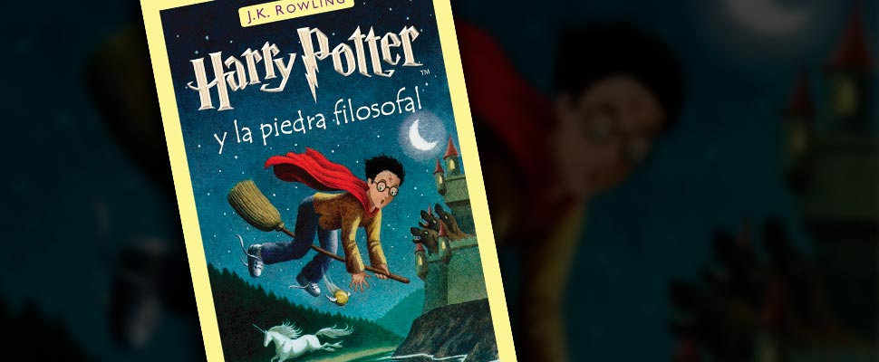

Adentrarse en los libros de Harry Potter es descubrir un mundo mágico que nos permite conocer los saberes ocultos de la hechicería. Mucho ha tenido que investigar J. K. Rowling para poder escribir esta, ya famosa, saga, cuando en 1997 publicó el primer libro de Harry Potter.
En el año 1997 se publica un libro que cambiaría el rumbo de la literatura juvenil universal:
Harry Potter y la piedra filosofal.
J.K. Rowlling, como cuenta la leyenda, la joven autora sin trabajo y deprimida por su separación, escribió este extraordinario libro en un café mientras su pequeña hija dormía en el cochecito.

Actualmente se han dado tanto películas como videojuegos basados en estos libros aclamados por la crítica